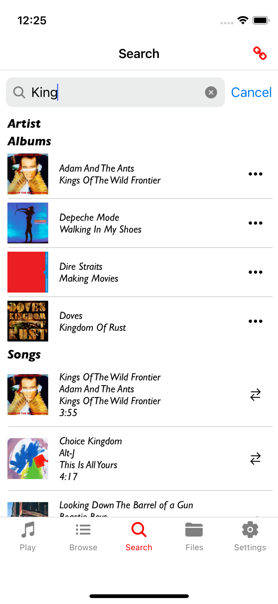
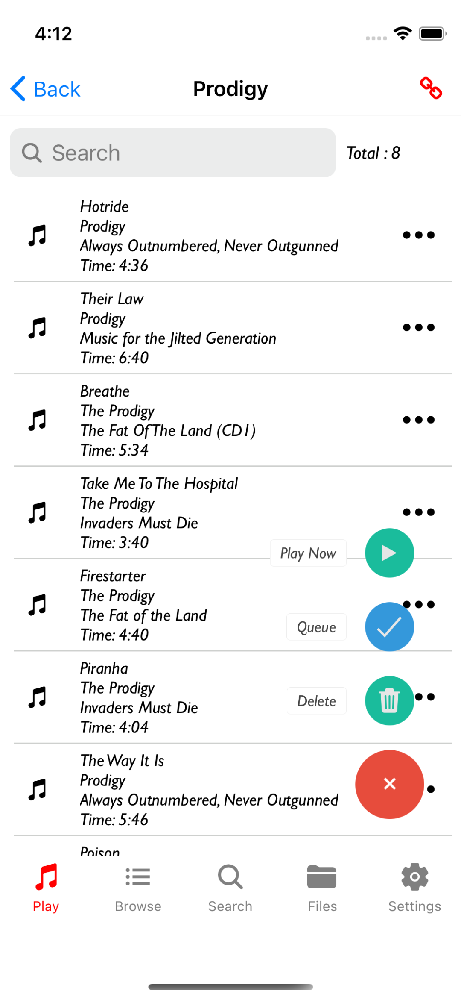
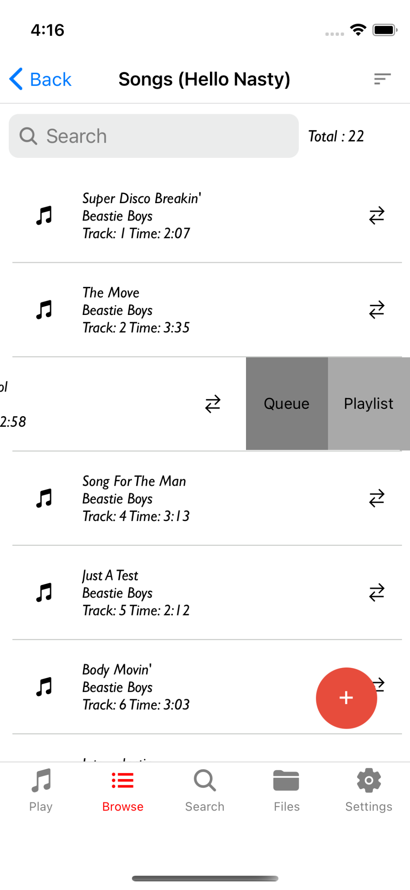

Maximum MPD
React Native based MPD Client for iOS
Welcome
Playing
Browse
Search
Files
Settings
Creating Playlists
Album Art
Privacy/Contact
Usage Guide
Maximum MPD is a full function MPD Client for iOS
Features:
- Random Playlist generation
- Multiple connections
- Server Discovery via Bonjour
- Artist, Album and Song Browser
- File Browser
- Quickly search for artists, albums and songs
- Output Selection
- Quickly create and edit playlists
- AlbumArt support if MPD version >= 0.21
Requirements:
An MPD Server running in your home network. See http://www.musicpd.org for more details
Welcome Screen
This is the initial screen when first loading the App. You can connect to configured or discovered MPD servers or add new ones/delete existing ones

Play Screen
The Play Screen has 3 tabs:
- Currently Playing Song (change the volume, change the song position and play/pause, stop, previous and next commands)
- Queue Management (control the selected song, create a random playlist of 50
- Playlist Management (view edit and create playlists)
Playing:

Playing Queue:

PlayLists:

Browse Screen
Drill down into Artists, Albums and Songs and add them to the queue or a playlist
Artists:

Albums:

Songs:
Search Screen
Search for Artists, Albums and Songs
Search:
Files Screen
Drill down into the files found in the MPD database
Files:

Settings Screen
Select different connections and other MPD settings such as Outputs, Album Art, Shuffle, Repeat etc
Settings:

Creating Playlists
Playlists can be added to when browsing/searching songs, albums or files
Clicking the "Add to Playlist" button opens a Select/Create Playlist diaolog. You can select an existing playlist or enter the name of a new one to create
Playlist Details screen:
Selecting the Playlist:
Add songs to the queue or active playlist by swiping left:
Album Art
Support for Album Art is provided via 2 options
- The Connected MPD server is Version 2.1 or greater
- Using a separate HTTP file server. It will work if the server is running on the same machine as the MPD server and either the MPD server has discovery turned on (zeroconf_enabled) or the MPD connection is configured using an IP address. See MPDAlbumArtServer for an example file server

Configuration example for an HTTP File server like Apache HTTP Server
If the configured port is 80, the Document Root is set to "/var/www/html", the album art files are stored in a directory called "coverart" (full path is "/var/www/html/coverart" and the name of the files are "config.jpg"
- Set the HTTP port configuration value to 80
- Set the URL prefix configuration value to "/coverart"
- set the Album Art Filename configuration value to "cover.jpg"
The URL will be assembled as follows
http://[IP address of MPD server]:[Configured HTTP Port][Configured URL Prefix]/[Music DB directory structure]/[Configured Album Art filename]e.g
http://192.168.1.1:80/coverart/James/The%20Best%20Of/cover.jpgNote: the directory structure under "/var/www/html/coverart" must be the same as your Music Database directory structure
An example of how to copy all cover.jpg files from your Music DB is:
- Change directory to where your Music DB root is
- Run the command
find . -name 'cover.jpg' -exec cp --parents \{\} /var/www/html/coverart \;
Configuration example for NGINX
server {
listen *:8080;
location /coverart/ {
root /media; # modify to fit your music directory
rewrite /coverart/(.*) /$1 break;
allow 192.168.178.0/24; # modify to fit to your network
deny all;
autoindex on;
}
}Privacy/Contact
Information Collection And Use
Maximum MPD collects no Data
Contact Richard Backhouse for more Information